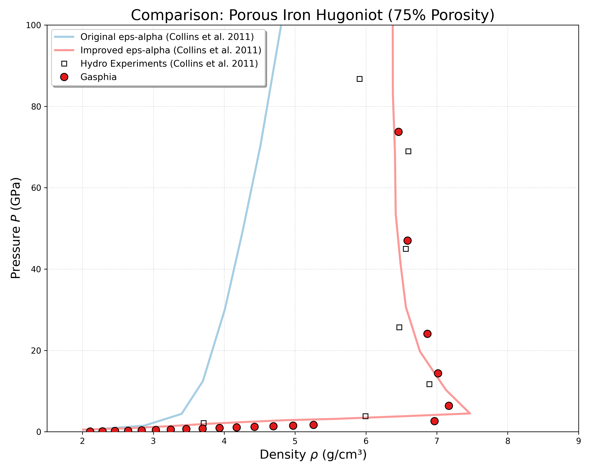

一、模型要解决什么问题？
在冲击（如陨石撞击）或爆炸加载下，多孔材料（砂土、rubble pile等）的行为与密实材料完全不同。绝大多数压力用于孔隙的压实过程，而孔隙压实又会大量放热，导致膨胀。总之冲击多孔隙度材质时，有如下特点：
- 吸收大量能量
- 产生局部高温
- 显著削弱冲击波强度
- 最终影响坑体大小和形态
传统 P-α 模型直接用压力 P 驱动压实，需要迭代求解 α 和 P（不过我根据论文实现了无需迭代的 P-α 模型）。
ε-α 模型的核心特点：改用体积应变 \(\epsilon_V\) 直接驱动压实，α 与 P 解耦，先更新 α，再算 P。
二、基本物理量
由于天文撞击中，压力一般都很大，体积应变也很大，所以大家一般都默认不考虑弹性压实阶段，直接进入塑形压实（不可逆），详细关于弹性压实阶段的信息可以参考论文[1][2].
| 符号 | 含义 | 公式 |
|---|---|---|
| \(\phi\) | 孔隙度 | \(\phi = V_{\mathrm{V}} / V\) |
| \(\alpha\) | 膨胀系数 | \(\alpha = 1/(1-\phi) = \rho_{\mathrm{S}} / \rho\) |
| \(\rho\) | 体密度 | \(\rho = \rho_{\mathrm{S}} / \alpha\) |
| \(\epsilon_V\) | 体积应变 | \(\epsilon_V = \ln(V/V_0)\) |
说明：
- 无孔隙：\(\alpha = 1\)
- 50% 孔隙：\(\alpha = 2\)
- 压缩时 V 减小 → \(\epsilon_V < 0\)
三、模型的基本假设
- 压实不可逆：卸载时 α 不变（不回弹）
- 压实速率由应变控制：\(\mathrm{d}\alpha/\mathrm{d}\epsilon_V\) 不直接依赖压力
- 先压实、后压固体：孔隙完全闭合后才进入固体压缩段
四、核心公式
因为孔隙压实是依靠体积应变驱动的，首先需要了解如何计算体积应变。在 SPH 计算中，体积应变率 \(\dot{\epsilon}_V\) 可以通过速度散度来计算：
笛卡尔坐标系下：
其中 \(u, v, w\) 分别是 \(x, y, z\) 方向的速度分量。
原始论文[1]给出的是轴对称柱坐标系下的格式：
其中 \(u\) 是径向速度，\(v\) 是轴向速度。
对 \(\dot{\epsilon}_V\) 逐步积分即可得到体积应变 \(\epsilon_V\)。
此外，孔隙在强烈的压实过程中会做功并转化为大量内能（热量），温度的上升反过来会引起基质材料的热膨胀。文献[2]在改进 \(\epsilon\)-\(\alpha\) 模型时，考虑了这种内能增加对体积应变造成的"反弹"效应（即热膨胀抵消了部分机械压实）。为了获取真实驱动孔隙压实的有效体积应变率，需要从总应变率中扣除热膨胀项：
其中，\(\left( \frac{d\epsilon_V}{dt} \right)_{\mathrm{total}}\) 为由速度散度计算得到的应变率，\(\Gamma_{s0}\) 为基质材料的初始 Grüneisen 参数，\(c_{s0}\) 为基质材料的初始体声速，\(E\) 为单位质量的内能。
在每个时间步中，根据当前的 \(\epsilon_V\) 判断所处的压实阶段，进而计算对应的 \(\alpha\) 值。
4.1 指数压实段（主要压实）
当 \(\epsilon_V < \epsilon_X\) 时：
其中 \(\kappa\) 是压实速率，\(0 < \kappa \leqslant 1\)。\(\kappa\) 越小，压实越"慢"（需要更大应变才能闭合）。
4.2 幂律压实段（后期硬压实）
当 \(\epsilon_X < \epsilon_V < \epsilon_C\) 时：
其中：
4.3 完全压实段
当 \(\epsilon_V \leq \epsilon_C\) 时：
4.4 \(\epsilon_C\) 的确定（保证导数连续）
实际计算时，\(\epsilon_C\) 其实只与材料参数有关，确定 \(\alpha_X\)、\(\kappa\)、\(\epsilon_X\) 就可以得到 \(\epsilon_C\)。
4.5 参数汇总
| 参数 | 物理含义 | 典型范围 |
|---|---|---|
| \(\alpha_0\) | 初始膨胀系数 | 1.0 ~ 2.5 |
| \(\kappa\) | 压实速率 | 0.7 ~ 0.98 |
| \(\epsilon_X\) | 过渡应变（指数→幂律） | -0.4 ~ -0.2 |
运行方式
测试目录：
GASPHiA-Tests/Collins2011_EpsilonAlphaPorousIronHugoniot
执行以下命令启动：
./run_all.sh --source-dir /path/to/GASPHiA --cuda 0
---
五、模型验证
完成了前文所述的核心计算逻辑，特别是针对内能增加导致的热膨胀修正（即从总应变率中扣除热应变项：\(d\epsilon/dt = (d\epsilon/dt)_{\text{total}} - (\Gamma_{s0}/c_{s0}^2)(dE/dt)\)）之后，我们需要一个标准的基准测试来验证程序实现的正确性。为此，我们选取了文献[2]中的案例：初始孔隙度为 75% 的多孔铁的冲击 Hugoniot 曲线计算。
1. 物理背景与为什么选择此案例？
对于极高孔隙率（>50%）的材料，在遭受强冲击压实时，孔隙空间的塌陷会转化为极高的内能（热量）。这种极端的加热效应会导致基质（固体）材料发生显著的热膨胀。
原始 \(\epsilon\)-\(\alpha\) 模型的局限：原始模型假设基质密度永远大于初始密度（即忽略了热膨胀的贡献）。从图中可以看出，在高压区，原始模型（虚线）预测的密度持续增大，完全失效。
改进后的模型：在引入了热体积应变修正后，模型能够反映出在极高压力下，热膨胀效应甚至会超过机械压缩效应，导致宏观密度不增反降。
2. 计算结果与图表分析
在此次验证计算中，我们采用了与文献一致的参数（状态方程采用 Tillotson EOS，孔隙参数设为 \(\kappa = 0.98, \epsilon_e = 0, \alpha_0 = 4\)），并将我们的 SPH 程序计算结果与文献数据进行了对比。

图：初始孔隙度为 75% 的多孔铁的 Hugoniot 曲线。横轴为密度 (g/cc)，纵轴为压力 (GPa)。
通过观察上图，我们可以得出以下清晰的结论：
- 捕捉到Hugoniot曲线 "倒拐" (Inversion) 现象：在压力达到约 10 GPa 之后，我们的数值计算结果完美展现了曲线向左反转的特征。在 10 ~ 100 GPa 的区间内，随着压力的升高，材料密度反而减小，这正是由于极端加热引起的基质材料热膨胀所致。
- 与理论解析和参考 Hydrocode 吻合：我们将程序跑出的状态点与文献中改进 \(\epsilon\)-\(\alpha\) 模型的理论解析解（实线）进行了叠加。可以看到，两者较为吻合。因为论文[2]没有给出详细的EOS信息，因此我只能推测低压力情况下的一些误差可能的原因是论文并没有使用Tillotson EOS。
参考资料
[1] Wünnemann K, Collins GS, Melosh HJ. A strain-based porosity model for use in hydrocode simulations of impacts and implications for transient crater growth in porous targets. Icarus. 2006 Feb 1;180(2):514-27.
[2] Collins GS, Melosh HJ, Wünnemann K. Improvements to the ɛ-α porous compaction model for simulating impacts into high-porosity solar system objects. International Journal of Impact Engineering. 2011 Jun 1;38(6):434-9.